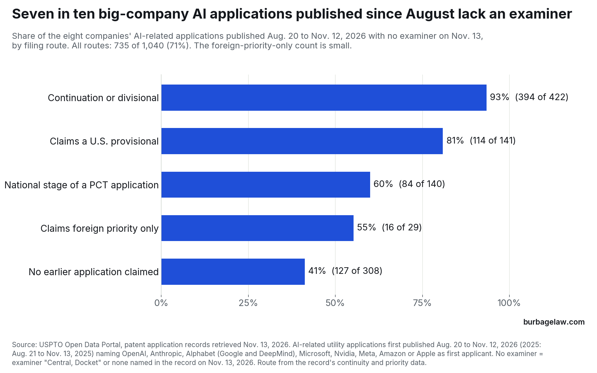
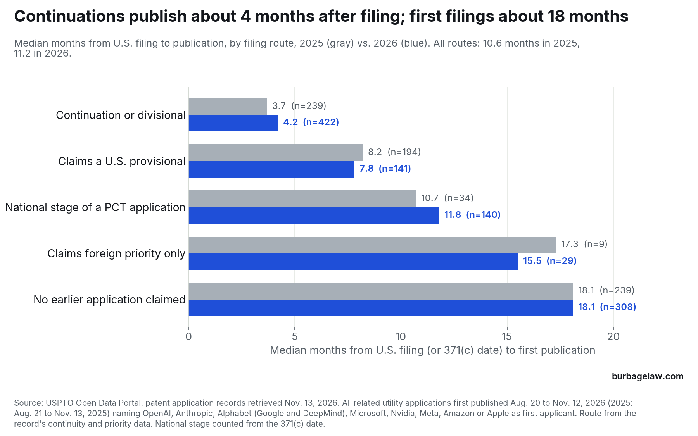

Data · Who is filing on what, edition 6
Seven in ten big-company AI applications published since late August have no examiner yet
AI-related U.S. applications first published from August 20 to November 12, 2026 that name OpenAI, Anthropic, Alphabet, Microsoft, Nvidia, Meta, Amazon or Apple as first applicant: where each sits at the USPTO today and how long it took to reach publication, against the same weeks of 2025.
Listen · Thinking Makes It So, 2026-11-13 · 6 min
All episodes · Subscribe: Apple Podcasts · Spotify
The short version
In the 13 weeks ending November 12, 2026, the USPTO published 1,040 AI-related applications naming one of the eight companies this series follows as first applicant, against 715 in the same weeks of 2025. On November 13, 735 of the 1,040, or 71%, had no examiner. All but four of their records name the examiner as “Central, Docket”; the four name none. For 686 of the 735 the art unit is “OPAP”, the Office of Patent Application Processing; the other 49 have an art unit but still no examiner. The USPTO describes its central docket as holding mostly unexamined applications that are waiting to be docketed to an examiner, a method of assignment it adopted in fiscal year 2021.
Publication says little about examination. Continuations reached publication a median of 4.2 months after filing, and 93% of them (394 of 422) have no examiner. Applications that claim no earlier filing published at 18.1 months, as the statute provides, and 41% of them (127 of 308) have no examiner.


Where the examined ones went, and how fast they all published
The 305 applications that do have an examiner went where last year's did. Technology Center 2600 holds 43% of them, 2100 holds 27% and 2400 holds 16%; for the 571 applications with an examiner in last year's group the shares were 44%, 31% and 17%. No single art unit holds more than 11 of this year's 305, and the largest, the speech and language units 2653, 2656 and 2657, have 11, 9 and 8. Those counts are too small to call a trend. Art unit 2122, which examines machine-learning applications, has 13 of the group, and none of the 13 has an examiner yet.
The median time from U.S. filing to publication was 11.2 months, against 10.6 a year earlier. For continuations, applications claiming a provisional and applications claiming nothing earlier, the medians moved half a month or less. National stage applications, counted from their 371(c) date, took 11.8 months, against 10.7.


One number smaller than it looks, and one I cannot explain
Last year's group, checked on the same day, has only 144 of 715 applications (20%) without an examiner. That is not a slowdown of three and a half times. The record shows where an application sits today, not where it sat a few months after publication, and last year's group has had a year longer to reach an examiner. Within this year's group, the applications filed 18 months or more ago are the fairest guide, and 39% of them (158 of 410) still have no examiner. My reading is that the 71% mostly reflects how recently these applications were filed, continuations above all, and that a substantial share of AI applications still wait more than a year and a half for an examiner. The USPTO reported on April 10, 2026 that its unexamined inventory had fallen from a peak of 837,928 in January 2025 to 776,995, so the queue is shrinking but long.
The second is Alphabet, Google's parent. Its Google and DeepMind companies published 112 AI-related national stage applications in the window, against 24 a year earlier. I checked that each is a separate application and publication. Forty-four of the 112 were published more than 18.5 months after their 371(c) date; a year earlier, one of 24 was. The median time from earliest priority date to U.S. publication was about 41 months, against 40 a year earlier, so these applications trace to filings made about three and a half years ago. Last week's edition found national stage publications across the whole USPTO at a series high. Alphabet's late publications fit that wave, and I have not found its cause.
What it means for in-house counsel
For these applications, publication is not a sign that examination is near. Seven in ten of these applications had no examiner on November 13, including 93% of the continuations, which published about four months after filing. Consider timing first-action costs in the prosecution budget from assignment to an examiner, the point at which the record names one, rather than from publication.
The USPTO’s pre-docketing notice pilot, announced May 29, 2026, sends a notice about three months before an application is expected to be docketed for examination. If one arrives, it is the time to confirm inventorship and ownership, to decide whether a preliminary amendment or an information disclosure statement is worth filing before the first action, and, for an application the business no longer needs, to consider express abandonment, which before examination begins can bring, by petition, a refund of the search fee and any excess claims fees under 37 C.F.R. 1.138(d).
None of this changes an application's standing as prior art. Once published, it counts under 35 U.S.C. 102(a)(2) as of its effective filing date against a later-filed claimed invention of another inventor, whether or not an examiner has opened it.
Method
Data: USPTO Open Data Portal, patent application records, retrieved November 13, 2026. November 12, 2026 was fully loaded when retrieved: 8,769 utility applications carry that publication date. The current window is the 13 weekly publication dates from August 20 to November 12, 2026; the comparison is the 13 from August 21 to November 13, 2025.
Applications are counted once, by application number, on their first publication date, when one of the eight companies is the first-named applicant (OpenAI; Anthropic; Alphabet, meaning Google LLC, DeepMind Technologies and GDM Holding; Microsoft Technology Licensing; Nvidia; Meta Platforms and Meta Platforms Technologies; Amazon Technologies; Apple). Name variants were searched with wildcard queries and compared by hand; one misspelled Microsoft record (“Technolgy”) was added to the 2025 group. An application is AI-related if any CPC code on its record is in G06N, G06F 40, G06V, G10L 13, G10L 15 or G10L 25, or its title matches the AI terms used since edition 1. There are 1,040 such applications in the current window and 715 in the comparison window, out of 2,564 and 2,090 publications by the eight companies.
No examiner means the record named the examiner “Central, Docket”, or named no examiner (four records), on November 13, 2026. Of the 735, 686 also show art unit “OPAP”; of those 686, 684 show the status “Docketed New Case – Ready for Examination” and 2 “Prosecution Suspended/Delayed”. These are statuses on November 13, 2026, not at publication. Technology center is the first two digits of the art unit. Applications filed 18 months or more ago are those whose filing date (371(c) date for national stage) is on or before May 13, 2025.
Filing route comes from each record’s continuity and priority data, in this order: national stage indicator; any continuation, continuation-in-part or divisional parent; a U.S. provisional; foreign priority; otherwise none. Months are days divided by 30.4375, from the record’s filing date to its first publication date; for a national stage application the record’s filing date is its 371(c) date. Earliest priority date is the earliest of the filing date and the filing dates of every parent, international and foreign application the record claims.
Counts under about 20, including every single art unit and the foreign-priority-only route, are small and should not be read as trends.
Source: USPTO Open Data Portal · USPTO, Central Docket FAQs · USPTO, “USPTO turns the corner on unexamined patent application backlog reduction” (April 10, 2026) · USPTO, Applicant Pre-Docketing Notice pilot program (May 29, 2026) · Burbage Law data series, edition 5 (national stage publications)
Data and citation
You may quote, chart and republish these figures with a citation to this page. Suggested citation:
Jon Burbage, Seven in ten big-company AI applications published since late August have no examiner yet, Burbage Law: Who Is Filing on What, ed. 6 (Nov. 13, 2026), https://burbagelaw.com/data/2026-11-13-ai-applications-waiting-for-an-examiner.html
← All data editions · Developments
Burbage Law is the practice of Jon Burbage, a registered patent attorney. 342 United States patents have issued from applications he wrote; the full list is on the Patents page. More about Jon Burbage.
These figures are computed from public USPTO records as described above. They are general information, not legal advice, and do not create an attorney-client relationship.